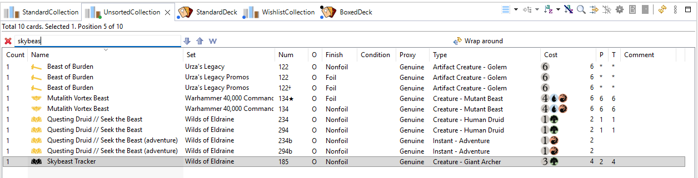

Most lists are sorted and merge identical cards into one row. An unsorted collection instead keeps the cards in the order you added them, one row per entry — just like a box of cards in real life.
Use it for a physical box or binder you don't want to sort: the list then tells you where a card is in the box.

Only Standard and For Trade collections can be unsorted (not decks, not Wishlist/To Print collections, not the Main collection). Unsorted collections show a green marker.
See also: Decks and collections · Searching and filtering